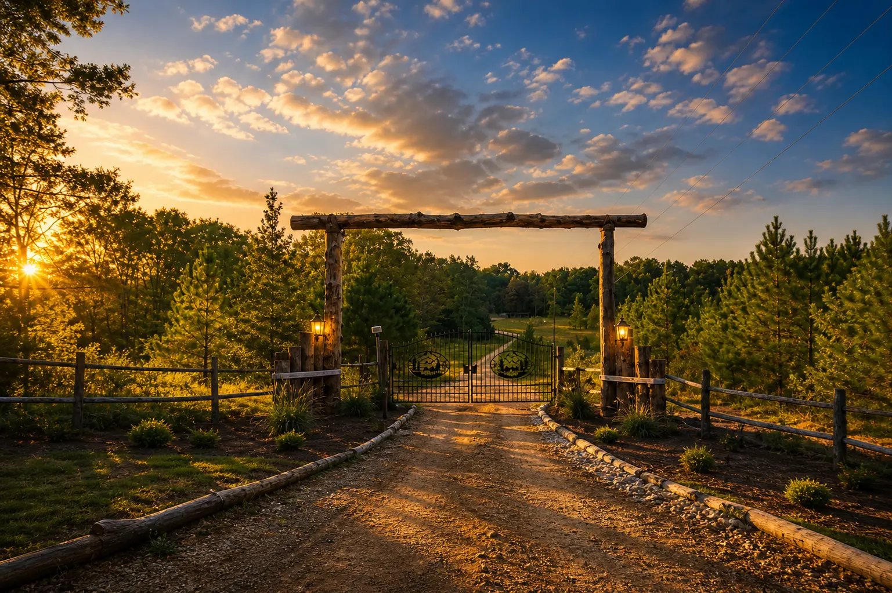

Cherokee, Alabama · Adults only
Your waterfront escape awaits.
Three private cabins made for romance, rest, and reconnection on beautiful Pickwick Lake.
If the booking link doesn't open, call 256-335-1827
A quiet place for two
Relax. Recharge.
Reconnect.
Wake beside Pickwick Lake, unwind in your private hot tub, and enjoy uninterrupted time together. Waterfront Retreat was created for couples to slow down, restore their energy, and focus on what matters most—each other.
Three unique retreats
Choose your cabin
Each cabin welcomes two guests and gives you your own peaceful hideaway on Pickwick Lake.
Life is better at the lake
Morning light. Quiet evenings.
From sunrise paddles to fireside conversations, the lake sets the rhythm for a relaxed and restorative stay.
Beyond your cabin
Life at the lake
Discover wildlife, sunsets, and the peaceful shores that make this a special place to recharge.
Ready to escape?
Your lake cabin is waiting.
See real-time availability for all three cabins and reserve securely through Guesty.
Check availabilityOr call to book: 256-335-1827